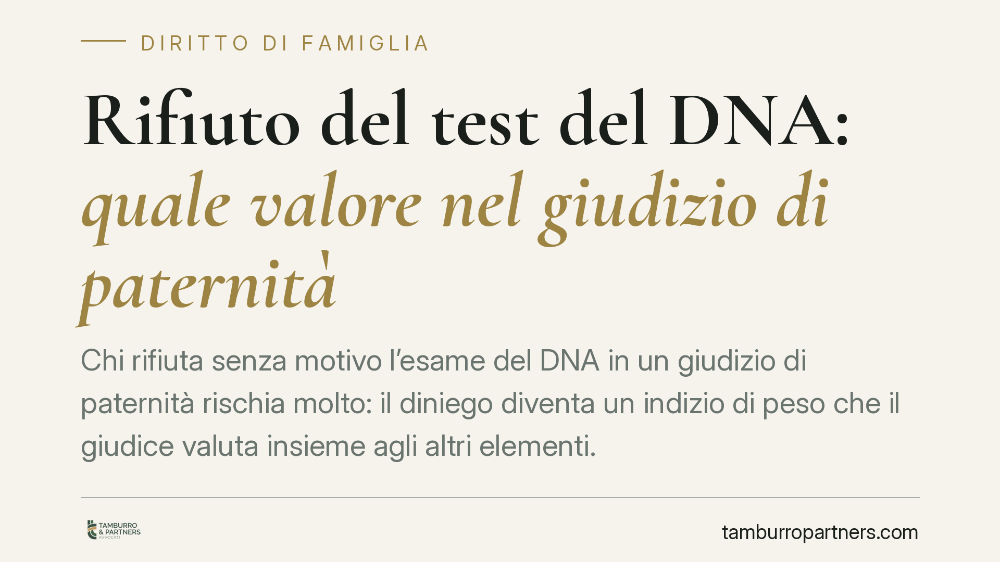

Rifiuto del test del DNA: quale valore nel giudizio di paternità
Chi rifiuta senza motivo l'esame del DNA in un giudizio di paternità rischia molto: il diniego diventa un indizio di peso che il giudice valuta insieme agli altri elementi. Una recente pronuncia di merito torna sul tema e ricorda le conseguenze economiche, incluso il mantenimento retroattivo dalla nascita del figlio.

Il caso
Una pronuncia del Tribunale di Caltanissetta è tornata su una questione ricorrente nei giudizi di accertamento della paternità: cosa accade quando il presunto padre si sottrae al test del DNA.
Il principio ribadito è noto ma delicato. Il rifiuto ingiustificato di sottoporsi all'esame non resta neutro: entra nel giudizio come elemento di valutazione a sfavore di chi lo oppone. Non si tratta di una condanna automatica, ma di un indizio di rilievo che, unito agli altri elementi raccolti, può orientare la decisione.
Inquadramento normativo
La base sostanziale della materia è l'art. 269 del Codice civile, che consente l'accertamento giudiziale della paternità con ogni mezzo di prova. È la norma che apre la strada all'azione: chiunque abbia interesse può chiedere al giudice di dichiarare chi sia il genitore.
Sul piano processuale entra in gioco l'art. 116 del Codice di procedura civile. Al secondo comma, questa disposizione permette al giudice di trarre "argomenti di prova" dal contegno delle parti nel processo. In concreto: se il presunto padre si rifiuta senza ragione di eseguire il test, quel rifiuto diventa un comportamento valutabile contro di lui.
L'esame del DNA, infatti, ha oggi un'affidabilità altissima. Negarsi, quando basterebbe un prelievo per chiarire tutto, difficilmente trova giustificazione agli occhi del giudice. Da qui il valore indiziario del diniego.
Un principio, non un automatismo
È importante leggere il principio nella sua esatta portata. Il rifiuto non produce di per sé, da solo e in modo meccanico, la dichiarazione di paternità. Non esiste una presunzione automatica.
Il diniego ha però un peso indiziario molto forte, che il giudice colloca all'interno di un quadro probatorio coerente: relazione tra le parti nel periodo del concepimento, dichiarazioni, testimonianze, eventuali altri elementi. Quando questo contesto è presente e il presunto padre si sottrae all'unica prova risolutiva, la decisione tende a fondarsi anche sul suo comportamento.
La differenza è sostanziale: il rifiuto non sostituisce la prova, ma ne rafforza il quadro complessivo.
Le conseguenze economiche
La dichiarazione di paternità ha natura ricognitiva: accerta un rapporto che esisteva già dalla nascita. Per questo i suoi effetti retroagiscono.
L'obbligo di mantenimento, previsto dall'art. 148 del Codice civile, non decorre dalla sentenza ma dal momento della nascita del figlio. Il genitore accertato può quindi essere tenuto a corrispondere anche gli importi relativi agli anni precedenti.
Qui si innesta la posizione del genitore che, nel frattempo, ha provveduto da solo al mantenimento. Secondo la giurisprudenza di legittimità, questi ha diritto al rimborso pro quota di quanto anticipato. Il fondamento di tale azione è individuato nello stesso art. 148 c.c. e nei principi generali in materia di gestione e arricchimento: entrambi i genitori sono tenuti al mantenimento in proporzione alle rispettive capacità, e chi ha sopportato per intero l'onere può recuperare la parte di spettanza dell'altro. Il richiamo alla disciplina della solidarietà (art. 1299 c.c.) va inteso in senso analogico e non come fondamento diretto dell'azione.
Implicazioni pratiche
Per il presunto padre, la sottrazione al test è una strategia ad alto rischio: non impedisce l'accertamento e può diventare l'elemento che lo determina, con conseguenze economiche estese agli anni passati.
Per la madre e per il figlio, la pronuncia conferma strumenti concreti: l'accertamento resta possibile anche di fronte all'ostruzionismo, e il mantenimento è dovuto fin dalla nascita.
Cosa fare in concreto
- Raccogliere la documentazione sulla relazione e sul periodo del concepimento: messaggi, fotografie, testimonianze, ogni elemento che dia coerenza al quadro probatorio.
- Conservare le prove delle spese sostenute per il figlio, in vista di un'eventuale azione di rimborso pro quota.
- Agire tempestivamente: è opportuno attivarsi senza ritardi, anche per non compromettere la ricostruzione dei fatti e la reperibilità dei testimoni.
- Valutare l'istanza di consulenza genetica nel giudizio: la richiesta formale di test mette la controparte di fronte alla scelta tra collaborare o esporsi alla valutazione del rifiuto.
- Richiedere una valutazione legale preliminare prima di avviare l'azione, per calibrare strategia processuale e profili economici.
Resta fermo che ogni caso va esaminato nella sua concretezza: le pronunce di merito offrono indicazioni utili ma non sostituiscono la valutazione del singolo fascicolo.
*Contributo informativo a cura di Tamburro & Partners Avvocati - Avv. Giuseppe Tamburro. Non costituisce parere legale.*
Ogni famiglia ha il suo equilibrio.
Separazione, divorzio, affidamento, assegno: se vuoi un confronto riservato su una specifica situazione, scrivi allo studio. Ti rispondiamo entro un giorno lavorativo.